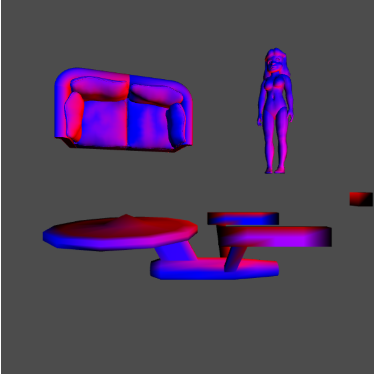
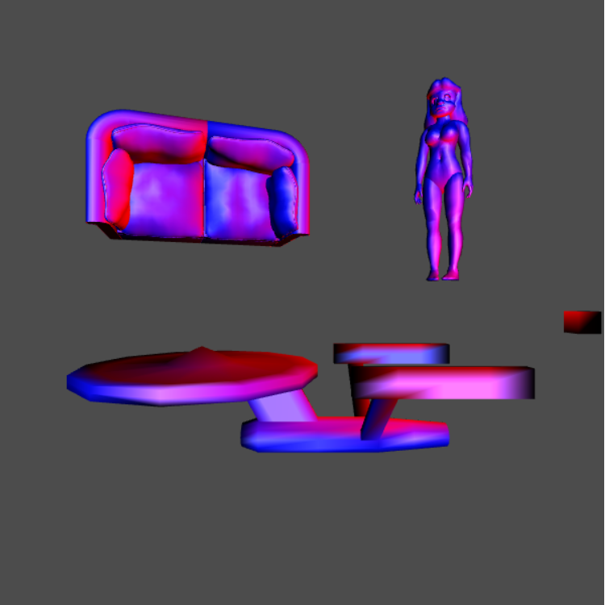
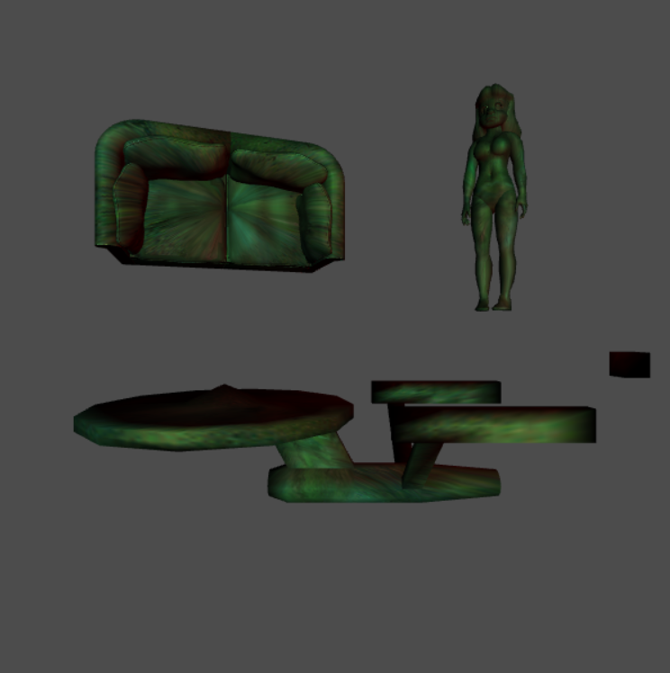
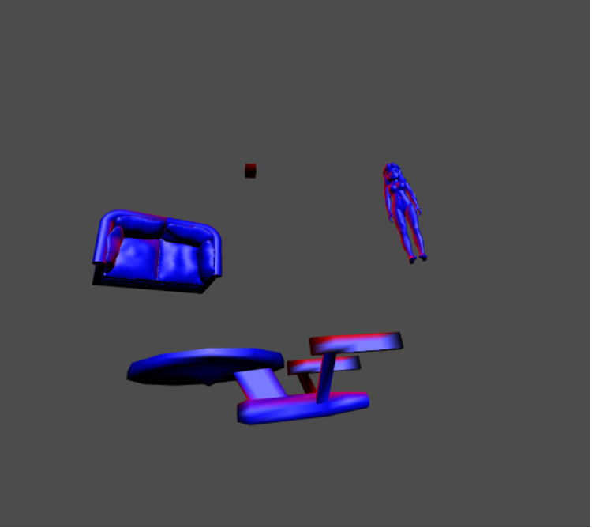
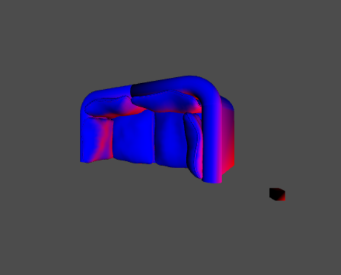
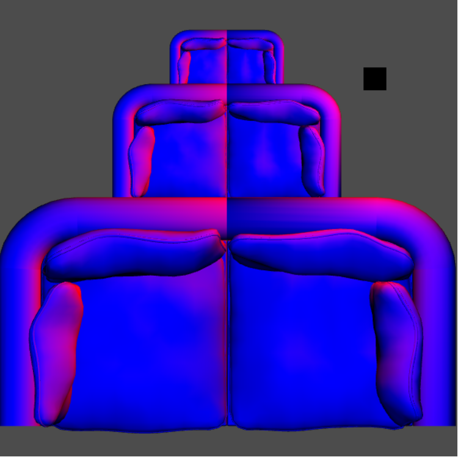

WebGl Program Features
Rendering multiple objects, using translation to move them around the screen
Basic lighting with a secondary light from the cube
 
Specular lighting also calculated
Texture Mapping
 
Camera Rotation
Object Rotation
 
Object Scaling